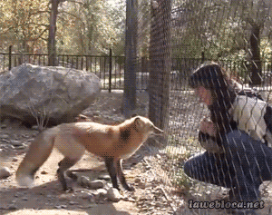

When a tiny new-born elephant is orphaned, it is often because its mother and family have been killed to serve the brutal
ivory trade. For an elephant, family is all important; a calf’s very existence depends upon its mother's milk for the
first two years of life.

How Daphine did it
None of this would have been possible without help of many people worldwide, for the rearing an infant elephant is an
expensive and long-term commitment during the time it is dependent upon milk and a team of trained carers who represent
the lost elephant family and are there for the little elephant until such time as it is comfortable amongst the wild
herds and chooses to become independent. The time involved depends entirely upon the personality of each individual and
also upon how well the elephant can recall its elephant family, but all the orphans reared by The David Sheldrick
Wildlife Trust are "elephants" again and integrated into the wild community by the age of ten, though always in their
large elephant hearts will be a corner for the specific humans who were their family in infancy.